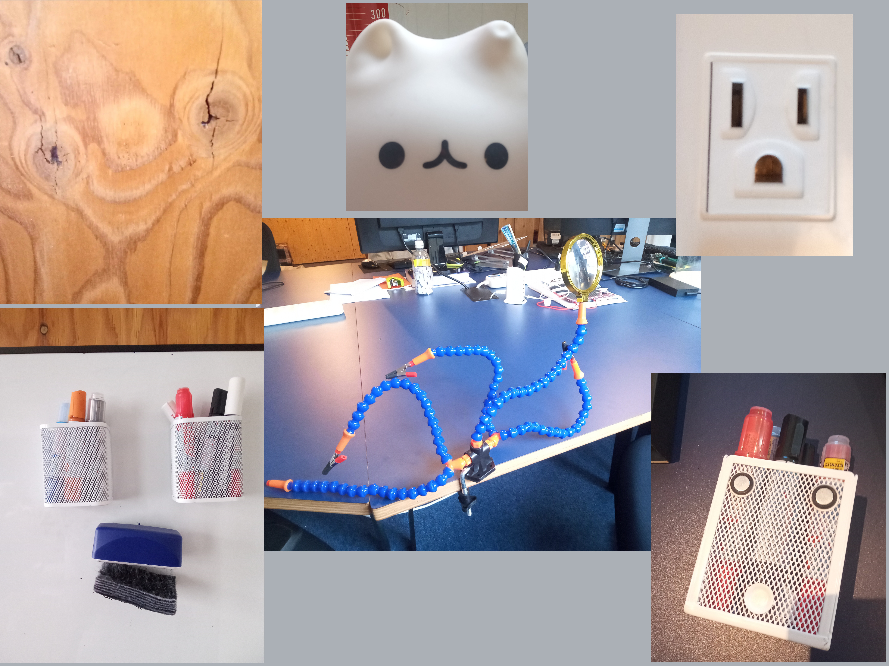

previous slide
--
Table of Contents
--
next slide
Life Detection
How can we "know it when we see it"?

As seen around the office. (#^-^)do
The erroneous interpretation of meaningful patterns in nebulous or noisy stimuls is called
pareidolia
.